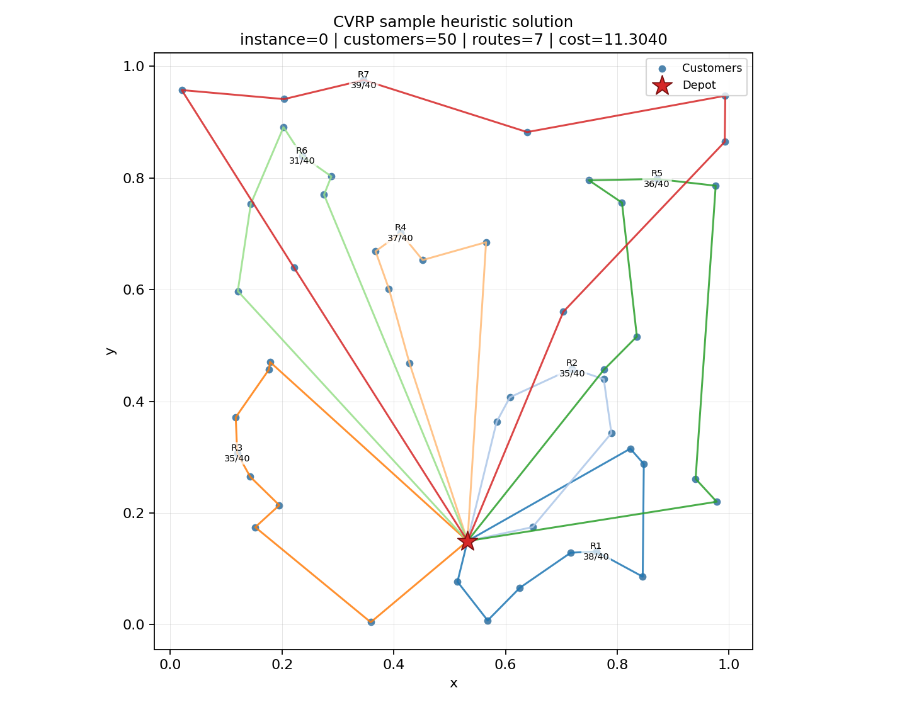
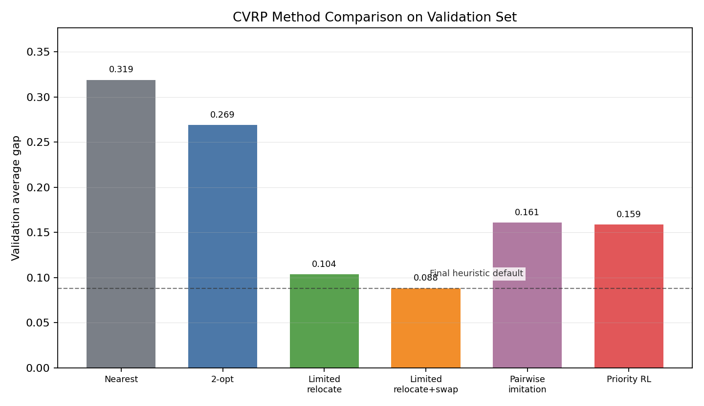

AI-based Vehicle Routing for Campus Parcel Delivery
CVRP 校园包裹配送路径规划
面向车辆容量约束的可行路径生成、启发式优化与学习方法探索
四川大学
赵晨旭
最终提交策略：用稳定 CPU heuristic 保证可行性与时间，用学习方法作为实验探索和方法分析。
项目目标与数据
CVRP 要求从一个 depot 出发服务所有客户，每条路径必须满足车辆容量约束。
任务约束
- 每个 customer 必须访问一次且只能访问一次。
- 每条 route 从 depot 出发，并最终回到 depot。
- 每条 route 的 demand 总和不能超过 capacity。
- 输出 JSON 使用 1-based customer ID，depot 不写入 route。
数据规模
| 文件 | 规模 | 用途 |
|---|---|---|
train_data.pkl |
7000 CVRP-50 | 训练 |
validation_data.pkl |
1000 CVRP-50 | 调参和选择方法 |
check_data_to_students.pkl |
1000 CVRP-50 + 500 CVRP-100 | 公开测试输出 |
评价指标
本项目先保证 feasibility，再比较 route cost、gap 和运行时间。
Feasibility
所有客户访问一次，route 不超容量。
Cost
所有 route 的欧氏距离总和，越低越好。
Gap
相对参考解 cost 的平均差距，越低越好。
Runtime
public check 需要满足约 180 秒目标。
工程判断：不可行解没有提交价值，所以所有方法切换都必须先通过 feasibility gate。
最终默认方法
nearest_2opt_relocate_limited_swap
1
容量感知最近邻
快速构造可行初始解，每次选择容量允许且最近的客户。
2
Route 内 2-opt
反转单条 route 中的一段访问顺序，减少交叉和绕路。
3
有限轮 relocate
把客户移动到另一条 route 的更合适位置，只接受可行改进。
4
有限轮 swap
在两条 route 间交换客户，进一步改善客户组合。
CVRP 路线可视化
样例图展示 depot、客户点、route 分组，以及每条 route 的 load/capacity。

为什么需要图
- 直观看出路径是否从 depot 出发并回到 depot。
- 帮助解释 route 间 relocate 和 swap 的作用。
- 答辩时比只展示 JSON 更容易让听众理解 CVRP 输出。
Validation 结果
最终方法在完整 validation 上保持 1000/1000 可行，并显著优于早期 baseline。
| 方法 | Feasible | Average cost | Average gap |
|---|---|---|---|
| Nearest | 1000/1000 | 13.93495 | 0.31894 |
| Nearest + 2-opt | 1000/1000 | 13.41012 | 0.26888 |
| Limited relocate | 1000/1000 | 11.67545 | 0.10360 |
| Limited relocate + limited swap | 1000/1000 | 11.51386 | 0.08817 |
Public check：1500/1500 可行，平均 cost 13.97681，正式生成耗时约 148 秒。
方法对比
学习路线有小幅提升，但当前最强稳定方案仍是 heuristic 默认方法。
关键结论
- Pairwise imitation 优于 MSE imitation，但仍落后 heuristic。
- Priority RL 训练约 13 小时，只带来小幅改进。
- 当前 RL 不是完整 POMO，只是优先级模型上的轻量微调。

工程实现
最终项目保留可执行入口、评估工具、训练脚本、测试和文档。
核心文件
solve.py：官方推理入口。src/heuristics.py：heuristic solver。src/vrp_eval.py：可行性和 cost 检查。scripts/evaluate_baseline.py：validation 评估。
AI 探索
train_priority_model.py：supervised imitation。train_priority_rl.py：priority RL finetuning。- 训练脚本默认输出进度日志和进度条。
- checkpoint 作为实验材料，不作为默认提交依赖。
最终提交内容
按项目 outline，核心提交包括 code、public-set output、report 和 presentation。
建议提交
- 代码：
solve.py,src/,scripts/,tests/ - 公开集输出：
outputs/heuristic/predictions.json - 报告：
docs/final_report_zh.md - 展示：本 HTML 或由它导出的 PDF/PPT
不建议提交
- 原始数据目录
VRP_project/ - 缓存目录
__pycache__/,.pytest_cache/ - 本地远程连接说明文档
- 无关训练中间输出
总结
本项目最终采用稳定 heuristic 作为提交方法，同时保留 AI 方法探索作为分析支撑。
最终方案
- 默认方法：
nearest_2opt_relocate_limited_swap - 优势：全实例可行、CPU 可运行、时间可控。
- 结果：validation gap 0.08817，public check 1500/1500 可行。
后续方向
- 更完整的 POMO-style 强化学习。
- 学习型 improvement operator。
- 更系统的 CVRP-100 参数与时间预算调优。
Feasible first
CPU-ready
Explainable heuristic
AI exploration